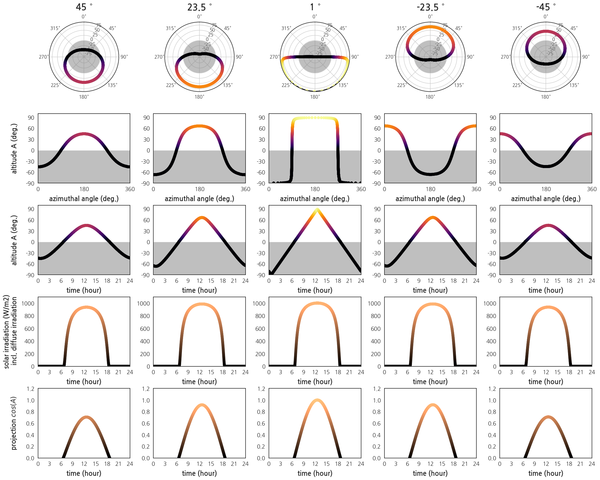

- 태양 위치 계산은 성가십니다.
- 날짜별, 시간별, 위치별 태양의 위치를 알고싶다면 pysolar가 편리합니다.
1. pysolar 설치
- pip로 간단하게 설치할 수 있습니다.
1
pip install pysolar
2. pysolar 사용
- pysolar를 사용하려면
import를 해야 합니다. - pysolar를 import 하고 모듈을 확인해보면 뭔가 많습니다.
- 그런데 공식문서에 설명이 잘 나와 있지 않아 아쉽습니다.
- 일시와 위치를 넣어주면 태양에 대한 정보를 알려줍니다.
- 일시는
datetime을 이용해 설정합니다.실행결과:1
2
3
4
5import datetime
KST = datetime.timezone(datetime.timedelta(hours=9))
date = datetime.datetime(2017, 3, 21, 13, 0, 0, tzinfo=KST)
date1
datetime.datetime(2017, 3, 21, 13, 0, tzinfo=datetime.timezone(datetime.timedelta(seconds=32400)))
- 그리고 태양을 관찰할 지점을 지정합니다.
1
2
3# Daejeon
lat = 36.3504
lon = 127.3845
2.1. 고도altitude
- 지표면으로부터의 각도입니다.
.get_altitude()를 사용합니다.실행결과: 출력 단위는 degree 입니다.1
2
3
4from pysolar.solar import get_altitude
alt = get_altitude(lat, lon, date)
alt1
53.57702210048166
2.2. 방위각azimuthal angle
- 정북 기준 시계방향 각도입니다.
.get_azimuth()를 사용합니다.실행결과: 출력 단위는 degree 입니다.1
2
3
4from pysolar.solar import get_azimuth
azi = get_azimuth(lat, lon, date)
azi1
189.44917229657798
2.3. 일사량radiation
- pysolar가 제공하는 일사량에는 대기에 의한 산란이 포함되어 있습니다.
- 이 때 대기모델은 미국 기준이기 때문에 데이터 활용에 주의해야 합니다.실행결과: 단위는 $W/m^2$ 입니다.
1
2
3
4from pysolar.radiation import get_radiation_direct
rad = get_radiation_direct(date, alt)
rad1
961.3376847317991
- 다음과 같은 수식으로 구성되어 있습니다.
- 일사량 $$\textrm{direct radiation} = flux \times exp(-1 \times od \times amr) \times daytime$$
- $$day$$ :
datetime.utctimetuple().tm_yday - $$daytime$$ :
1 if altitude > 0 else 0 - apparent extraterrestrial flux : $$flux = 1160+(75\sin( \frac{2 \pi}{365}(day-275)))$$
- optical depth : $$od = 0.174+(0.035\sin(\frac{2 \pi}{365}(day-100))$$
- air mass ratio : $$amr = 1/\sin(altitude)$$
- $$day$$ :
2.4. 시각화
- 2017년 춘분 다른 위도의 일주운동을 그려봅니다.
- 방위각 vs 고도
- 시간 vs 고도
- 시간 vs 일사량 (pysolar 제공)
- 시간 vs 사상 (projection)
- 극좌표와 직교좌표계를 동시에를 담습니다.
1
2
3
4
5
6
7
8
9
10
11
12
13
14
15
16
17
18
19
20
21
22
23
24
25
26
27
28
29
30
31
32
33
34
35
36
37
38
39
40
41
42
43
44
45
46
47
48
49
50
51
52
53
54
55
56
57
58
59
60
61
62
63
64
65
66
67
68
69
70
71
72
73
74
75
76
77
78
79
80
81
82
83
84
85
86
87
88
89
90
91
92
93
94
95
96
97
98
99
100
101
102
103
104
105
106
107
108
109
110
111
112
113
114
115
116
117
118
119
120
121
122
123
124
125
126
127
128
129
130
131
132
133
134
135
136
137import matplotlib.pyplot as plt
import seaborn as sns
from matplotlib.ticker import MultipleLocator, AutoMinorLocator
lats = [45, 23.5, 1, -23.5, -45]
lon = 127.3845
### data
nlats = len(lats)
alts_lat = {}
azis_lat = {}
date_hr_lat = {}
### altitudes and azimuthal angles
for i, lat in enumerate(lats, 1):
alts, azis, dates_hr = [], [], []
for hr in range(24):
for min in range(0, 60, 1):
date_hr = datetime.datetime(2017, 3, 20, hr, min, 0, tzinfo=KST)
dates_hr.append(date_hr)
alt = get_altitude(lat, lon, date_hr)
azi = get_azimuth(lat, lon, date_hr)
alts.append(alt)
azis.append(azi)
date_hr_lat[i] = dates_hr
alts = np.array(alts)
alts_lat[i] = alts
azis = np.array(azis)
azis_lat[i] = azis
### Figure
fig = plt.figure(figsize=(30,24))
axs = {}
for i, (lat) in enumerate(lats, 1):
axs[i] = fig.add_subplot(5, nlats, i, projection='polar')
axs[i].set_theta_zero_location("N")
axs[i].set_theta_direction(-1)
axs[i].plot(np.deg2rad(azis_lat[i]), alts_lat[i], c="k", zorder=1)
axs[i].scatter(np.deg2rad(azis_lat[i]), alts_lat[i], c=alts_lat[i],
cmap="inferno", zorder=2, vmin=0, vmax=90)
axs[i].fill(np.deg2rad(azis_lat[i]), [0]*len(azis_lat[i]), "gray", alpha=0.5)
axs[i].set_ylim(-80, 90)
axs[i].set_title(f"{lat}" + " $^{\circ}$", fontdict={"fontsize":32, "fontweight":"bold"}, pad=16)
# azimuth vs altitude
hrs = list(range(1440))
for i, (lat) in enumerate(lats, nlats+1):
axs[i] = fig.add_subplot(5, nlats, i)
axs[i].scatter(azis_lat[i-nlats], alts_lat[i-nlats], c=alts_lat[i-nlats],
cmap="inferno", zorder=2, vmin=0, vmax=90)
axs[i].xaxis.set_major_locator(MultipleLocator(180))
axs[i].xaxis.set_minor_locator(MultipleLocator(60))
axs[i].set_xlim(0, 360)
axs[i].set_ylim(-90, 100)
yticks = [-90, -60, -30, 0, 30, 60, 90]
axs[i].set_yticks(yticks)
axs[i].set_yticklabels(yticks)
axs[i].tick_params(axis="both", labelsize=20)
axs[i].fill_between(hrs, -90, 0, facecolor="gray", alpha=0.5)
axs[i].set_xlabel("azimuthal angle (deg.)", fontdict={"fontsize":24, "fontweight":"bold"}, labelpad=12)
if i == nlats+1:
axs[i].set_ylabel("altitude A (deg.)", fontdict={"fontsize":24, "fontweight":"bold"}, labelpad=12)
# time vs altitude
hrs = list(range(1440))
for i, (lat) in enumerate(lats, 2*nlats+1):
axs[i] = fig.add_subplot(5, nlats, i)
axs[i].scatter(hrs, alts_lat[i-2*nlats], c=alts_lat[i-2*nlats],
cmap="inferno", zorder=2, vmin=0, vmax=90)
axs[i].xaxis.set_major_locator(MultipleLocator(180))
axs[i].xaxis.set_minor_locator(MultipleLocator(60))
axs[i].set_xlim(0, 1440)
axs[i].set_ylim(-90, 100)
xticks = [int(x//60) for x in axs[i].get_xticks()]
axs[i].set_xticklabels(xticks)
axs[i].set_xlabel("time (hour)", fontdict={"fontsize":24, "fontweight":"bold"}, labelpad=12)
yticks = [-90, -60, -30, 0, 30, 60, 90]
axs[i].set_yticks(yticks)
axs[i].set_yticklabels(yticks)
axs[i].tick_params(axis="both", labelsize=20)
axs[i].fill_between(hrs, -90, 0, facecolor="gray", alpha=0.5)
if i == 2*nlats+1:
axs[i].set_ylabel("altitude A (deg.)", fontdict={"fontsize":24, "fontweight":"bold"}, labelpad=12)
# irradiation accounting for the scattering of light (by US atmosphere model)
for i, lat in enumerate(lats, 3*nlats+1):
axs[i] = fig.add_subplot(5, nlats, i)
# irradiation by pysolar
irrs_pysolar = []
for j in range(len(date_hr_lat[i-(3*nlats)])):
irr_pysolar = get_radiation_direct(date_hr_lat[i-(3*nlats)][j],
alts_lat[i-(3*nlats)][j])
irrs_pysolar.append(irr_pysolar)
axs[i].scatter(hrs, irrs_pysolar, c=irrs_pysolar,
cmap="copper", zorder=2, vmin=0, vmax=1100)
axs[i].xaxis.set_major_locator(MultipleLocator(180))
axs[i].xaxis.set_minor_locator(MultipleLocator(60))
axs[i].set_xlim(0, 1440)
xticks = [int(x//60) for x in axs[i].get_xticks()]
axs[i].set_xticklabels(xticks)
axs[i].set_xlabel("time (hour)", fontdict={"fontsize":24, "fontweight":"bold"}, labelpad=12)
axs[i].tick_params(axis="both", labelsize=20)
axs[i].set_ylim(0, 1100)
if i == 3*nlats+1:
axs[i].set_ylabel("solar irradiation (W/m2)\n incl. diffuse irradiation", fontdict={"fontsize":24, "fontweight":"bold"}, labelpad=12)
# direct irradiation, above the atmosphere
for i, lat in enumerate(lats, 4*nlats+1):
axs[i] = fig.add_subplot(5, nlats, i)
irradiation = np.sin(np.deg2rad(alts_lat[i-(4*nlats)]))
axs[i].scatter(hrs, irradiation, c=irradiation,
cmap="copper", zorder=2, vmin=0, vmax=1)
axs[i].xaxis.set_major_locator(MultipleLocator(180))
axs[i].xaxis.set_minor_locator(MultipleLocator(60))
axs[i].set_xlim(0, 1440)
xticks = [int(x//60) for x in axs[i].get_xticks()]
axs[i].set_xticklabels(xticks)
axs[i].set_xlabel("time (hour)", fontdict={"fontsize":24, "fontweight":"bold"}, labelpad=12)
axs[i].tick_params(axis="both", labelsize=20)
axs[i].set_ylim(0, 1.2)
if i == 4*nlats+1:
axs[i].set_ylabel("projection " + "$cos(A)$", fontdict={"fontsize":24, "fontweight":"bold"}, labelpad=12)
fig.align_ylabels([axs[1], axs[6], axs[11], axs[16], axs[21]])
fig.tight_layout()
- 일주운동의 연중 변화를 살펴봅니다.
- 지역은 대전으로 고정하고 날짜만 춘분, 하지, 추분, 동지로 나눕니다.
- 방위각 vs 고도
- 시간 vs 높이가 1인 막대기의 그림자 끝 위치
- 시각화 코드입니다.
1
2
3
4
5
6
7
8
9
10
11
12
13
14
15
16
17
18
19
20
21
22
23
24
25
26
27
28
29
30
31
32
33
34
35
36
37
38
39
40
41
42
43
44
45
46
47
48
49
50
51
52
53
54
55
56
57
58
59
60
61
62
63
64
65
66
67
68
69
70
71
72
73
74# Daejeon
lat = 36.3504
lon = 127.3845
# dates
months = [3, 6, 9, 12]
dates = [21, 21, 23, 22]
colors = ["red", "green", "blue", "purple"]
markers = ["x", "^", "s", "o"]
alts, azis = {}, {}
for month, date in zip(months, dates):
alts[month], azis[month] = [], []
for hr in range(24):
for minu in range(0, 60, 30):
date_hr = datetime.datetime(2017, month, date, hr, minu, 0, tzinfo=KST)
alt = get_altitude(lat, lon, date_hr)
azi = get_azimuth(lat, lon, date_hr)
alts[month].append(alt)
azis[month].append(azi)
alts[month] = np.array(alts[month])
azis[month] = np.array(azis[month])
### visualziation
fig = plt.figure(figsize=(12,6))
# diurnal motion
ax1 = fig.add_subplot(1, 2, 1, projection='polar')
ax1.set_theta_zero_location("N")
ax1.set_theta_direction(-1)
ax1.fill(np.deg2rad(azis[3]), [0]*len(azis[3]), "gray", alpha=0.5)
for month, marker, color in zip(months, markers, colors):
ax1.plot(np.deg2rad(azis[month]), alts[month], c=color, zorder=1)
im1 = ax1.scatter(np.deg2rad(azis[month]), alts[month], marker=marker,
c=alts[month], ec=color, lw=1, cmap="inferno",
vmin=0, vmax=90, zorder=2)
cbar1 = plt.colorbar(im1, ax=ax1, fraction=0.046, pad=0.15, ticks= [0, 30, 60, 90])
cbar1.set_label("altitude (deg.)", fontsize=20, labelpad=12)
ax1.set_title("diurnal motion", fontdict={"fontsize":20, "color":"gray", "fontweight":"bold"}, pad=12)
# shadow
ax2 = fig.add_subplot(1, 2, 2, projection='polar')
ax2.set_theta_zero_location("N")
ax2.set_theta_direction(-1)
# cmaps = ["Reds_r", "Greens_r", "Blues_r", "Purples_r"]
time_arr = np.linspace(0, 47, 48)/2
handles = []
for month, color, marker in zip(months, colors, markers):
shadow_idx = np.where(alts[month]>0)[0]
shadow_azis_rad = np.deg2rad(azis[month][shadow_idx]+180)
shadow_lengths = 1/np.tan(np.deg2rad(alts[month][shadow_idx]))
ax2.plot(shadow_azis_rad, shadow_lengths, c=color, zorder=1)
im2 = ax2.scatter(shadow_azis_rad, shadow_lengths, marker=marker,
c=time_arr[shadow_idx], ec=color, lw=1, cmap="gist_gray",
vmin=0, vmax=23.5, zorder=2)
handles.append(im2)
ax2.set_ylim(0, 3)
ax2.yaxis.set_major_locator(MultipleLocator(1))
cbar2 = plt.colorbar(im2, ax=ax2, fraction=0.046, pad=0.15, ticks= list(range(28, 4)))
cbar2.set_label("time (hour)", fontsize=20, labelpad=12)
ax2.set_title("shadow motion", fontdict={"fontsize":20, "color":"gray", "fontweight":"bold"}, pad=12)
fig.legend(handles=handles, labels=["spring equinox", "summer soliste", "autumn equinox", "winter soliste"],
ncol=4, bbox_to_anchor=(0., 0.9, 1., .1), mode="expand")
fig.tight_layout(rect=[0,0,1,0.9])